Strong positive result. Short prompts produced four visually separable surface classes while retaining the authored quadruped morphology. The shell row is the cleanest local-control evidence: FLUX adds a discrete dorsal component while leaving much of the source head, limbs, and body exposed and substantially unchanged.
What changed: rigid-component generation is no longer only a speculative downstream segmentation problem. The generator can express armor, an integrated shell, or fitted stone plates over one controlled envelope without first replacing that envelope with a generic animal.
Claim ceiling: these images establish visual morphology retention and separable surface semantics. They do not establish automatic rigid-region recovery, deformation behavior, or production generality.
Worn rigid-component probe. All three seeds retain the stance and broad mass distribution while constructing articulated armor with clear boundaries.
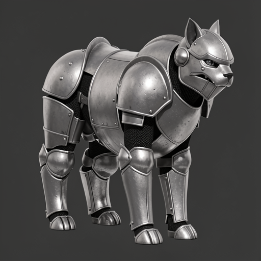
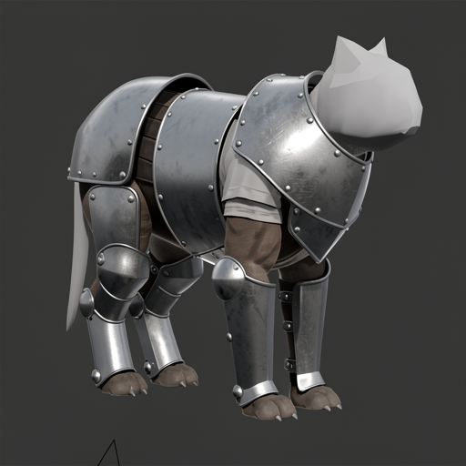
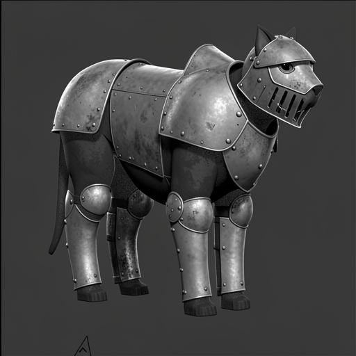
Deformable-surface control. The prompt elaborates material aggressively without materially replacing the authored silhouette.
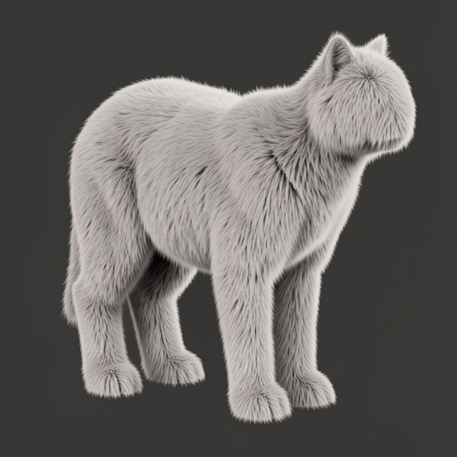
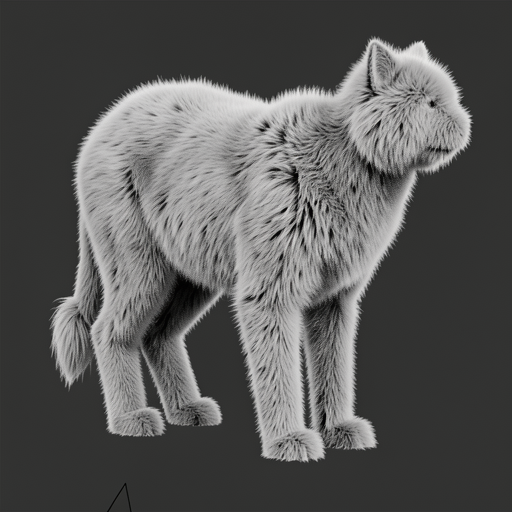
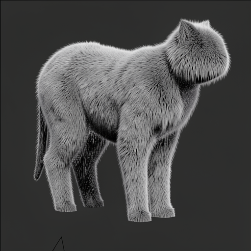
Integrated rigid-component probe. Strongest evidence that a local prompt can add a bounded rigid carrier without restyling every exposed surface.
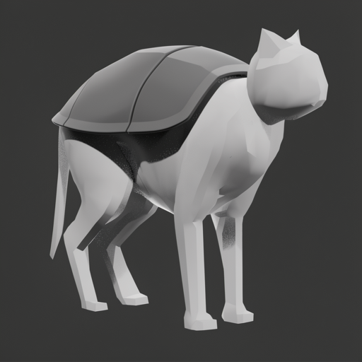
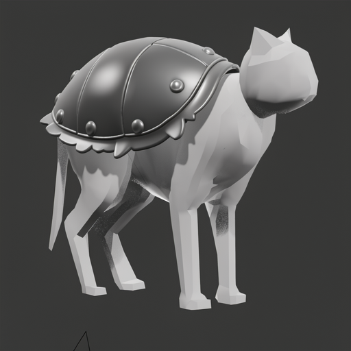
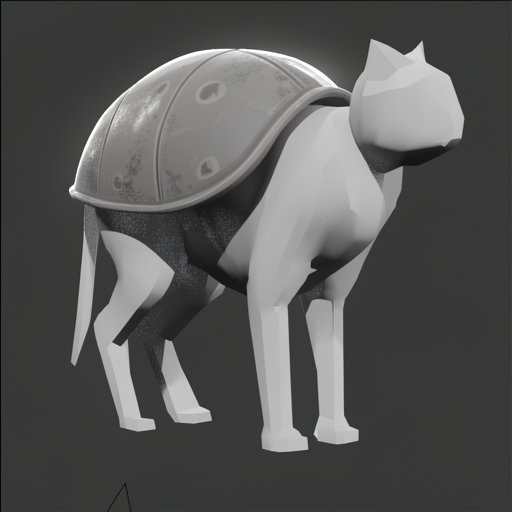
Whole-body rigid-material probe. FLUX follows the same body organization while introducing explicit plate seams and rigid segmentation across the surface.
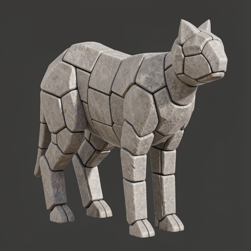
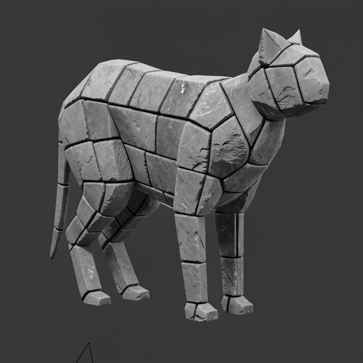
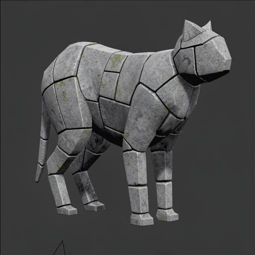
Same prompts and seed, new operator-authored source. The revised cranial, cervical, scapular, pelvic, and hind-limb organization survives both deformable and rigid elaboration. Camera, framing, and viewport lighting differ, so this is directional source-authority evidence rather than a geometry-only effect-size estimate.
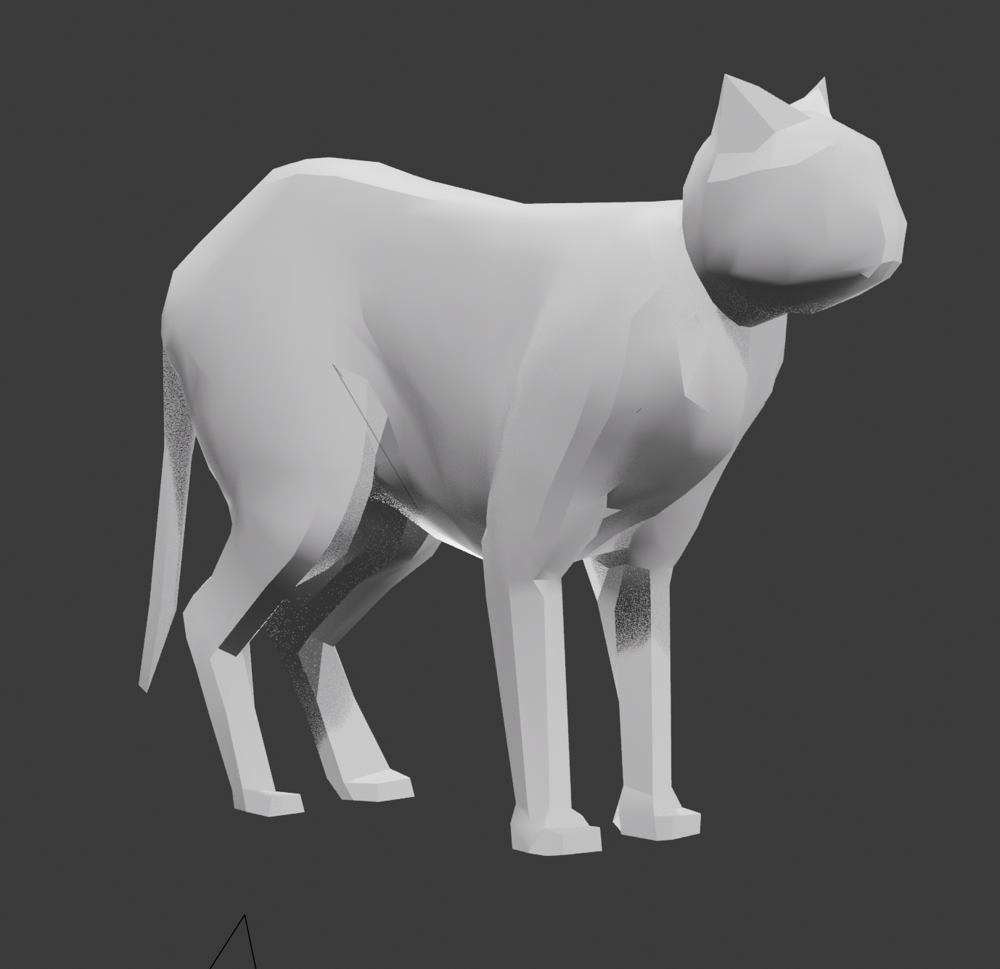
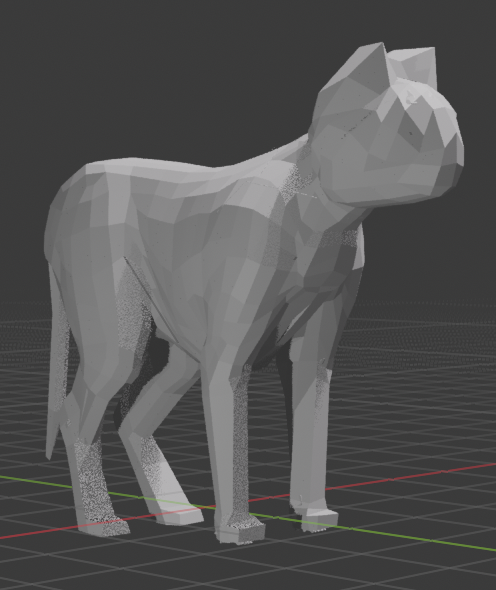
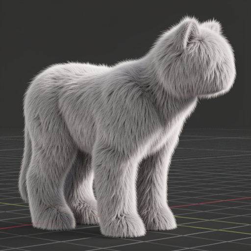
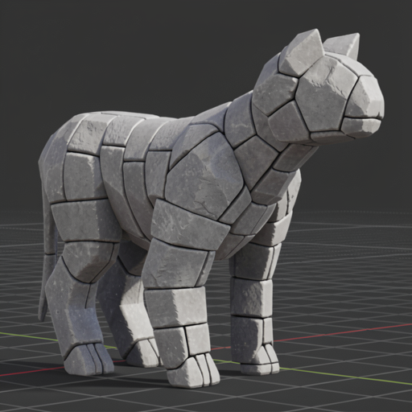